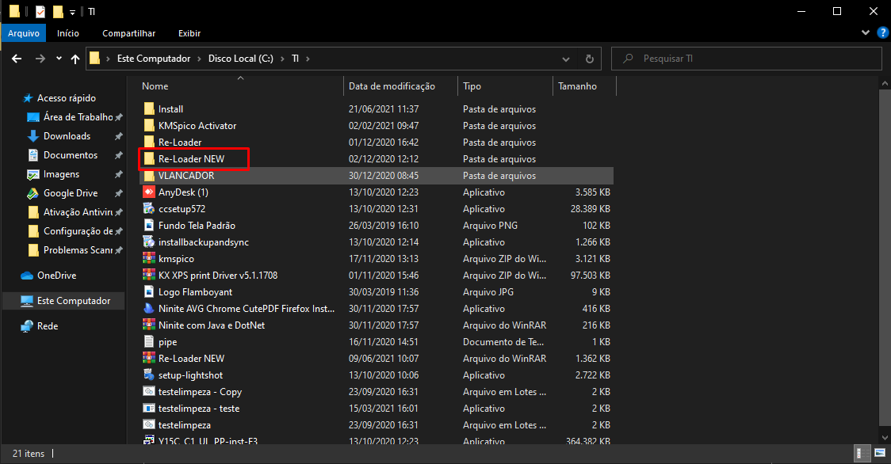

Seja bem vindo ao TI
Ativação do Windows e Office
-
1º Passo: Desativando antivírus
Para ativar o Windows primeiramente desative o antivírus.
Vá no canto inferior direito da sua barra de tarefas, visualize uma “seta” indicando para cima, e clique nela.
Com botão direito do mouse, clique em cima do ícone do AVG.
- Abrirá um pop-up para desativar, clique para desativar, em seguida confirme a desativação clicando em “OK”, no pop-up que vai abrir.
-
Feito isso, vamos ativar o Windows e Office.
2º Passo: Vá no C: da máquina e acesse a pasta “TI”. C:\TI
- Dentro da pasta TI, temos 3 ativadores, o KMSpico Activator, o Re-Loader e Re-Loader NEW. Recomendo usar o o Re-Loader NEW. Só use o KMSpico Activator, em caso de erro. Então abra a pasta “Re-Loader NEW”.

- Dentro da pasta, vai ter o ativador dentro, execute. E clique em “SIM” no Controle de Usuário Windows.
- 3º passo: Iniciando a ativação. Com o programa aberto, clique em “Eu aceito”.
- Após Verifique se está selecionado Windows e o Office. Caso queira ativar somente um deles, desmarque o outro que não quer. E clique em Ativar.
- Clique em “SIM” e Aguarde o fim da ativação.
- E quando finalizar, os ícones do Windows e Office, estarão com uma “Bolinha verde”, caso dê erro ficará vermelho.

- Nesse caso. Ativado com Sucesso. NOTA: LEMBRE-SE DE REATIVAR O ANTIVÍRUS, É SÓ REPETIR O PROCESSO QUE FEZ PARA DESATIVAR.